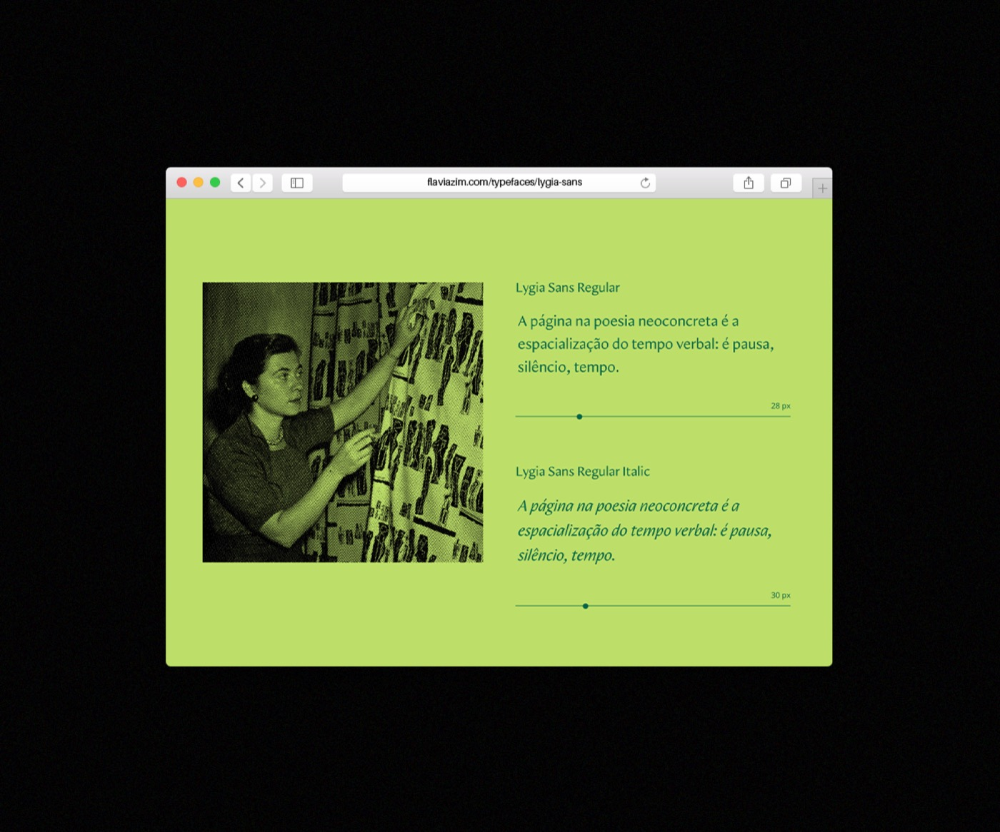
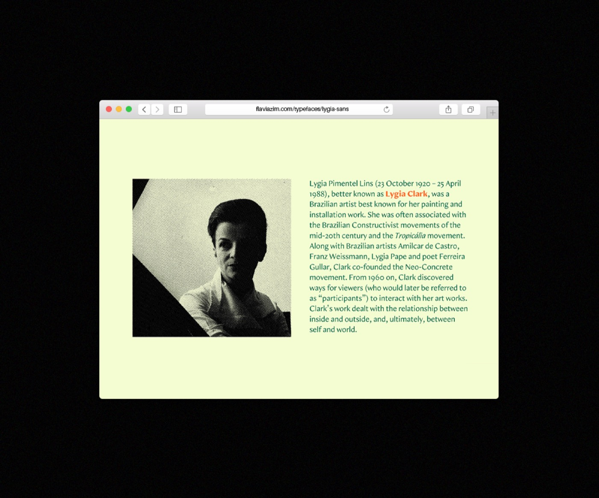
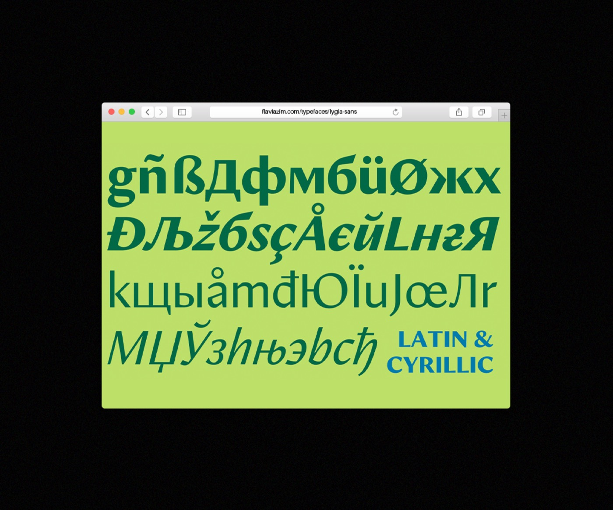
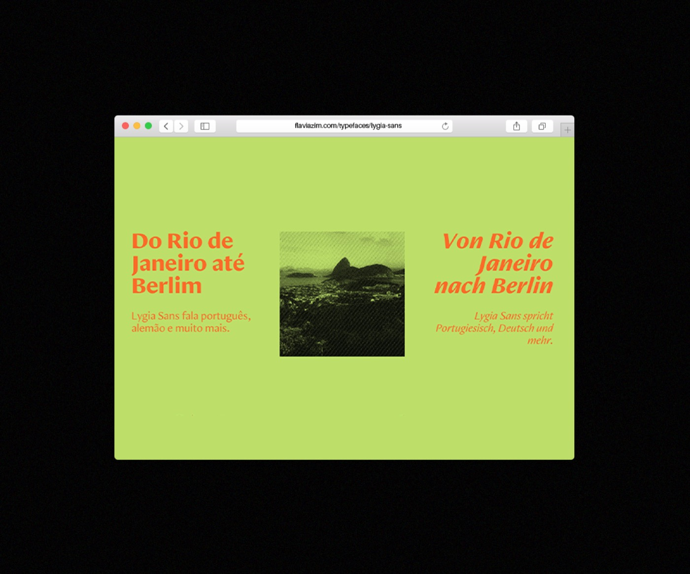

Design by Cecília Cartaxo
Advised by Alberto Molina (albertmolina.es)
Typeface used with permission from Flavia Zimbardi
2024
About
Final project for the Digital Design course of the Master's in Analog and Digital Publications in Valencia, Spain.
Aiming to integrate skills in programming, web design, and WordPress, the project's proposal was to create a website based on a personal area of interest. Given my interest in typography, I developed a mini-site dedicated to Lygia Sans, a typeface created by type designer Flavia Zimbardi.
Inspired by Grilli Type's interactive specimens, my goal with the site was to present the context and characteristics of the typography through interactive elements and visual storytelling.



